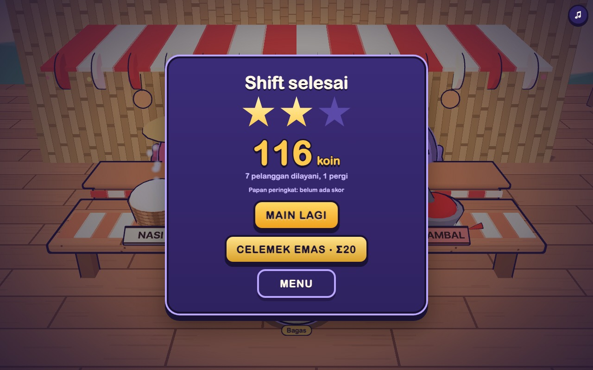
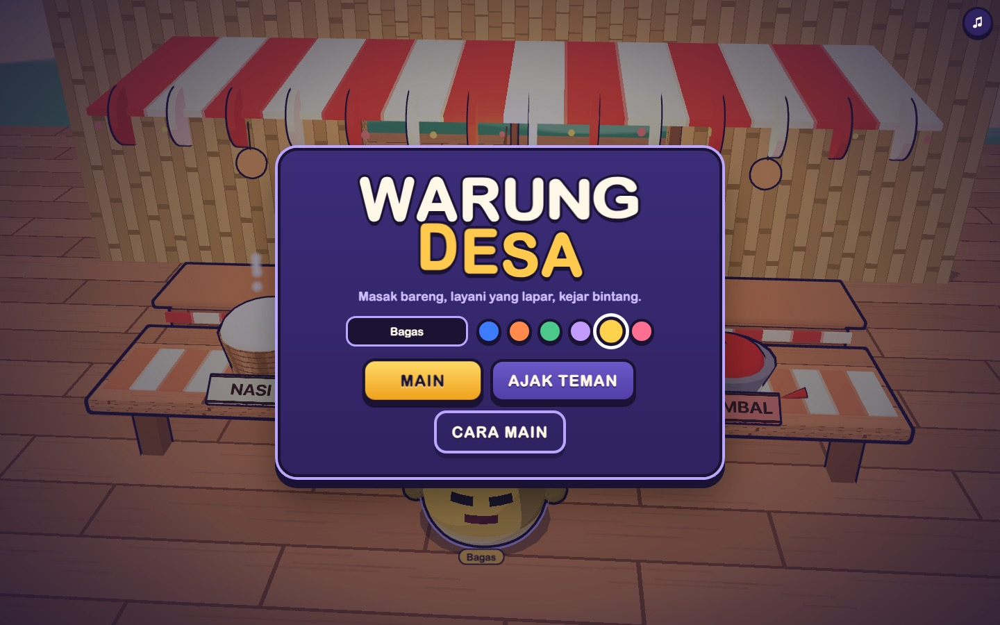
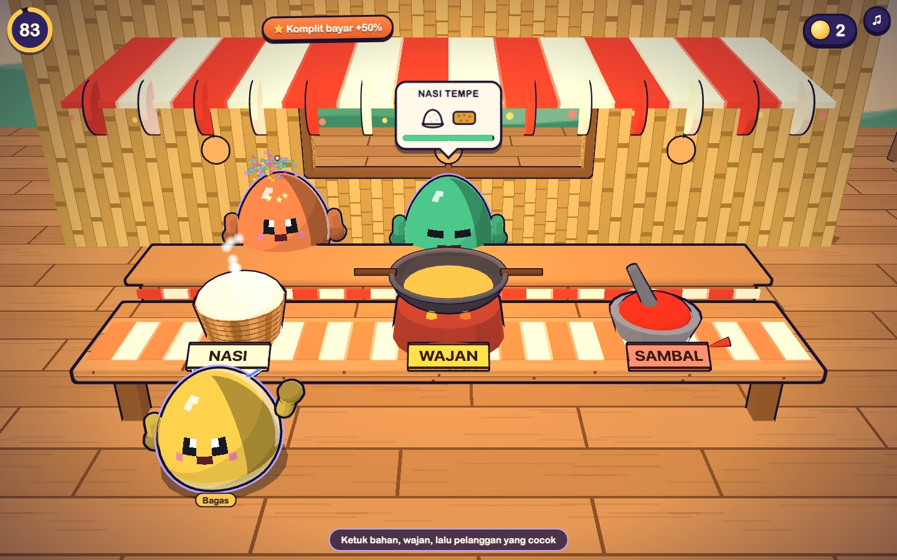
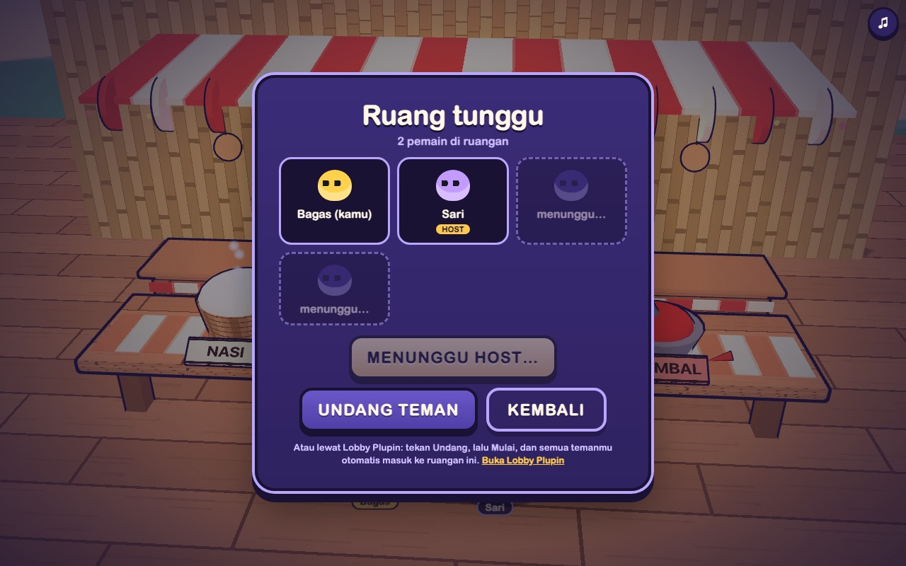
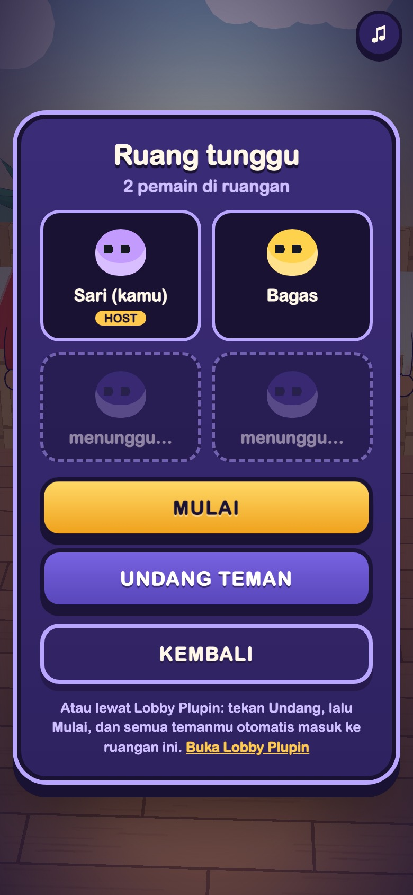
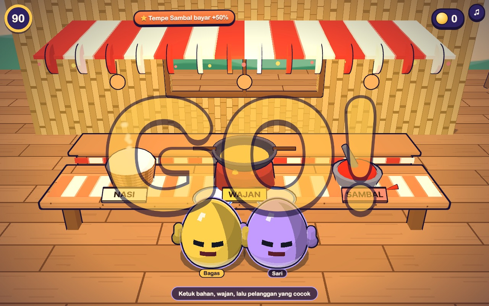
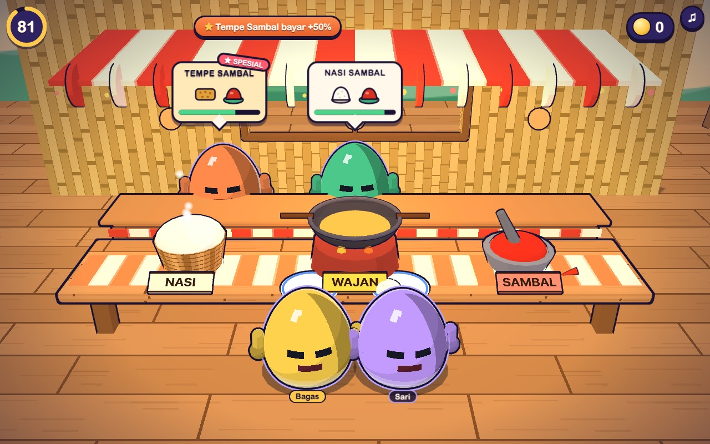

Game official Plupin pertama, dan contoh pemakaian tiap fitur SDK.
Main: https://warung-desa.plupin.com · Repo: github.com/himanusia/plupin-warung-desa (submodule example/warung-desa di repo plupin) · Dipublikasikan dari akun Plupin (centang emas) lewat plupin up.
Warung desa 3D untuk 1–4 pemain. Pelanggan datang dengan pesanan di atas kepalanya. Ambil nasi dan sambal, goreng tempe di wajan (3 detik, tunggu ting!), susun piring sesuai pesanan, lalu ketuk pelanggannya. Piring benar dibayar, cepat dapat tip, pesanan spesial hari ini dibayar +50%, piring salah dibuang, dan pelanggan yang menunggu terlalu lama ngambek lalu pergi. Satu shift 90 detik; 60, 110, dan 160 koin = 1, 2, 3 bintang.


Kiri: layar judul (desktop). Kanan: momen sajian, pelanggan senang dengan bintang dan konfeti, koki beremot, banner spesial.
Ketuk atau klik bakul nasi, cobek sambal, atau wajan: Plup lo melompat ke sana dan memakainya. Ketuk pelanggan untuk melayani. Suara menyala di ketukan pertama; tombol di pojok kanan atas mematikannya. Layout menyesuaikan layar: desktop lebar, dan di HP stasiun serta pelanggan dirapatkan supaya adegan memenuhi layar.
?p=kode) yang otomatis mendudukkan mereka di room yang sama (new Room({ party })). Game tidak bisa membuat kode party; lobby platform yang membuatnya, jadi game hanya membaca kodenya.

Ruang tunggu di desktop (host) dan di HP (tamu), diambil dari produksi.


Hitung mundur 3-2-1-GO setelah host menekan Mulai, lalu dua pemain di satu warung (yang satu dari HP). Game tidak jalan sebelum host menekan Mulai.
Semua pemain dan pelanggan adalah Plup, mascot yang sama dengan lobby (createPlup dari @plupin/character/three): badan bulat toon dengan outline tinta dan neon, tangan dan kaki karet, wajah dari stamp bernama. Roblox tidak dipakai di mana pun. Emot berupa data (nama, wajah, glyph, klip): yang gratis dari EMOTES, ditambah Sorak (emot animasi official yang dijual di shop) yang dimainkan dari keyframe yang sama, dan klip jalan WADDLE yang ditulis game sendiri. Pelanggan berganti wajah (tenang, cemas, marah) menurut kesabarannya dan memakai aksesori berbeda.
| Apa | Bagaimana |
|---|---|
| Dunia 3D | three.js, shading toon berpita dan outline tinta yang sama dengan Plup: warung bambu, kanopi bergaris, lampu gantung, jendela ke sawah dan palma, bakul nasi berkukus, wajan dengan api, cobek sambal. |
| Juice | squash-and-stretch di semua lompatan dan ambilan, bahan terbang melengkung ke piring, partikel (uap, percik, asap wajan, konfeti), getar kamera, hit-stop saat melayani, angka melayang, koin terbang ke penghitung, bintang muncul satu per satu, timer berdenyut di 10 detik terakhir. |
| UI | HUD cincin timer dan koin, gelembung pesanan yang menempel di kepala pelanggan dengan meter kesabaran, layar judul dengan huruf melompat dan pilihan nama dan warna Plup, ruang tunggu, tutorial, hitung mundur, layar hasil. |
| Audio | Semua disintesis di browser (Web Audio), tanpa berkas audio: musik marimba pentatonik dengan bass dan shaker yang mempercepat di 15 detik terakhir, plus efek (ambil bahan, desis wajan, ting, koin, sajian, salah, pergi, hitung mundur, bintang, fanfare). Tombol bisukan diingat. |

Kiri: tampilan HP. Kanan: layar hasil dari satu shift nyata di produksi (116 koin, 7 pelanggan, 2 bintang).
| File | Fitur |
|---|---|
src/game.ts | aturan murni (waktu masuk sebagai parameter, acak dari seed, ruang tunggu sebelum shift); 9 tes |
src/actors.ts, emotes.ts | createPlup, emot, klip kustom |
src/scene.ts, toon.ts, fx.ts, audio.ts | dunia toon responsif, juice, audio sintetis |
src/net.ts | Room, Peers, event host, kode party; satu kursi terpilih menjalankan aturan, lainnya mengirim ketukan (authority: "host") |
src/roll.ts | rollPlatformRandom: pelanggan spesial dari angka acak platform |
src/board.ts | Leaderboard (membaca papan yang dideklarasikan) |
src/shop.ts | requestPurchase dan getEntitlements: celemek emas permanen Σ20; game tidak pernah membelanjakan Sigma |
plupin.json | engine 3d, authority host, satu papan, satu produk |
Pengecekan plupin up (iPhone 13, jaringan fast3g): halaman interaktif 1,24 detik, 0 galat, semua budget terpenuhi. Ukuran bundel 601 KiB mentah, 159 KiB gzip. Teruji di dev dan produksi dengan dua pemain nyata (desktop dan HP): pesanan sama di kedua layar, hanya host yang bisa memulai, undian spesial datang dari platform. Pembelian celemek teruji di dev dengan akun non-pembuat (halaman konfirmasi platform, Σ20).
koin sudah dideklarasikan dan dibaca, tapi kosong sampai ada mode yang diwasiti.@plupin/character dan SDK terbaru belum ada di npm; game me-resolve keduanya dari checkout platform (example/) sampai rilis berikutnya.createPlup({ model })), tapi belum ada jenis listing "model" untuk dijual creator.bun install bun test src # aturan (9 tes) bun run typecheck bun run build # mencetak ukuran bundel bun run dev # tambah ?round=20 untuk shift latihan pendek plupin up ./dist --api https://api.plupin.com # dari akun Plupin, lewat cek anggaran
Pekerjaan platform yang lahir dari game ini: plupin dev menjawab /api/play/random (#934), Plup jadi karakter default 2D dan 3D (#944), pointer example/ (#938, #946), promosi ke main (#940, #948).